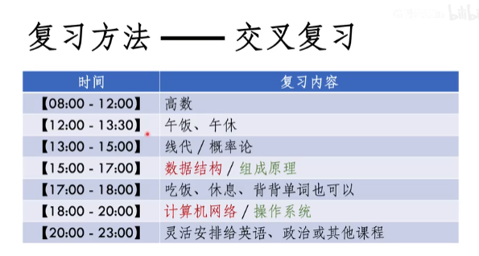

408复习攻略
成绩单：
报考专业：电子信息
英语二 85
政治 66
数学二 122
计算机专业学科基础专业综合 140
总分413
408简介
科目与难度：
数据结构：❤❤❤
操作系统：❤❤
计组：❤❤❤
计网：❤ （以计网为1❤难度）
题目类型：
选择题：40题 80分
综合应用题：7题 70分
（详细的题目类型比例和分析见知乎）
复习方法
复习资料
教材
王道单科书
《数据结构》严蔚敏
《计算机组成原理》白中英
《计算机组成原理》唐朔飞
《计算机网络》谢希仁
《操作系统》汤子瀛
买二手就行
单科书的话不必要去看单科书从头到尾看一遍
真题：王道真题讲解
模拟题：王道模拟题（9月份出）
五轮复习法
第1轮
学习王道四门单科书
第一轮只需做选择题
一两天搞不懂的内容直接跳过，可以留到
第2轮
再过一遍单科书，不是说重新读一遍
第二轮主要关注你第一轮做的错题和对应相关的内容
巩固一下尝试解决第一轮没搞懂的内容
每复习一节完成大题
第3轮
主要关注你的错题(特别是大题)
继续尝试掌握前面两轮没有搞懂的东西
第4轮
主要做真题、模拟题（时间不够可不做）
真题非常重要一定要做
模拟题其实UP主是没有做的
大家时间充裕的话可以做一做
但是一定要先做完真题再做模拟题
你先做完真题什么错题
搞都搞懂了，然后你再去做模拟题时间够的话
你可以不做也行其实
第5轮
查漏补缺
再看错题！（选择、大题、真题）
是在搞不懂就战略性放弃，值不了几分
交叉复习法
隔天交叉复习四门客
比如说:
5月11日复习数据结构和计算机网络
5月12日复习组成原理和操作系统
说明：
组成原理和os有很多相似的内容，里面比如说包括这种一些置换算法，比如说组成原理里面里面有cash的置换算法，os里面有page的置换算法，然后他们还有一些查表，什么段表页表都是很相似的东西。
然后数据结构内容比较多也比较复杂，然后加上计网计网比较轻松一点。
原因：
然后一天复习两门这样是比较好的
一天复习四门不太现实，容易手忙脚乱
一天只复习一门的话，战线拉的太长。
除了408你还需要复习数学（例如花一个上午）、英语（背单词+做题）、政治（政治后期可能需要花较多的时间），一天复习四门可能挤压其他学科的复习时间。
Up主的时间表：

如何做笔记
不要单独去做笔记
不要单独拿个本子公公整整、子子细细把教材或者说视频上的内容再整理一遍
没有必要！浪费时间！
你抄一遍你还不如多多去做几道题了
这个是完全没有必要
很多同学有这种完美主义的倾向
我们的目标是花尽可能少的时间去掌握尽可能要多的知识
记住啊千万不要干这种傻事
什么时候做笔记呢
不是说一点笔记也不做，我们也要做笔记。
情况1：
单科书上没讲清楚或者说自己不理解的地方，我查了资料看了视频我搞懂了，那么我简单的记一下，记在单科书相应内容附近
情况2：
做错的题需要这个适当的整理一下
不需要搞那种很漂亮的表格
只需要拿一张A4记录一下（记下题号，什么内容）
记下来之后，然后你就有你会看到这个整个表，上面哪些内容哪些你错的比较多的
第一轮复习完，除了答题的草稿纸，你应该只有两样东西：
（1）做了一些笔记的单科书
（2）N张A4纸，记录了自己错题的题号、内容、页码
个人觉得无需思维导图，看单科书目录就行（王道貌似思维导图）
真题和模拟题
真题是非常非常非常重要的
做题时间
408是下午考，定个时间在那个对应的时间进行模拟考试
严格计时，严格判分，不要欺骗自己
对自己越严==老师判题给你放水
复习的误区
误区1
仔仔细细一遍搞定408
正确做法是重复多次，进行3~5轮复习
不要看别人3个月复习就能上岸，有些同学很夸张的这种什么2个月，甚至有1个月。
误区2
第一遍就想搞定每个知识点，做对每一道题
正确的做法是对于太难太难太复杂的内容，如果当天的话我没搞懂，那我就跳过了，后面复习的时候再来应对这些难点。
误区3
在看王道单科书之前学习一遍教材
浪费大量时间，408考纲和教材的内容还是有出入的
正确做法是直接看王道单科书，遇到不懂、不够清除的再去看教材
对跨考的同学来说也是没有必要的
误区4
408内容太多记不住。
有的同学一开始的说，我复习了可能一个月，我复习到后面前面的已经全部都忘了，他认为408内容太多是不可能记住的。
那是其实不是这样的。
因为现在是6月底快7月了，半年之后的话你应该至少重复了3遍408的内容，我觉得到时候95%的内容你肯定已经记住了。
所以说不要担心，不会记不住，只要你动手作题，那肯定你记得住。
误区5
只看书看视频不动手作题
不做题和没看书一样
正确做法：
第一轮，每看一节单科书做一节选择题，然后立即回顾做错的知识点
时间充裕可以简单浏览一下题目，不复杂可以一起做掉，大题可以全留给第二轮。
三个指导思想
（1）重复多次的效果是远大于花大量的时间学习一次的效果，不要死磕一个知识点
（2）选择对自己来说性价比最高的学习方式，不要钻牛角尖，这里的性价比讲的是分数和时间的比例
（3）动手做题是最重要的，所以考试最终就是动手做题。
常见问题
（1）现在开始复习晚吗？
难道我说晚了，你就不考了？动起来！
不要问这种没有意思的问题
（2）做的题错很多怎么办？感觉好难？
我的答案只有一个就是重复！重复！重复！再重复！
这个没办法，你第一遍做确实是这样，大家心态一定要稳定。
第一遍错很多是正常的，第二遍就会好很多，第三遍会好更多。
重复就行了坚持就行了
（3）群友复习快又好，我不行了。
关你啥事，按照自己的节奏推进。
然后考研群不是不是用来水的，不是用来聊天的，你是交流。
实在搞不懂的问题，你可以请教别人的。
千万不要每天花什么几个小时水群，早上水一会，中午水一会，晚上水一会。
最重要的两个因素
第一个是执行力。
特别是动手作题，现在就开始动手作题,。
第二个是心态。心态也很很重要不要被别人所影响，然后不要被同学老是其他任何人影响你的心态。你就把自己当成一个和尚每天复习就行了。